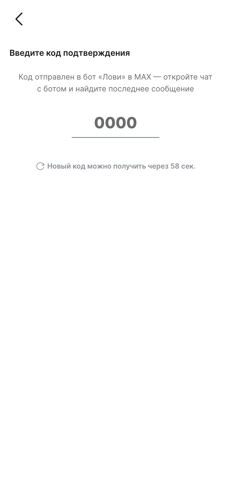

LOVII · экран входа · канонический макет к приёмке · 28 сентября 2026
Вход и OTP: спокойный, собранный экран
Жалоба была точная: тексты наезжали друг на друга, экран прыгал, поля кода выглядели незавершённо, логотипа не было вовсе. Ниже — макет по паттерну пинкод-экрана (быстрый вход): логотип, четыре ячейки кода и одна строка статуса, которая меняет текст, а не место. Всё в колонке по центру — как на пинкод-экране. Обе темы и все состояния — состояния можно щёлкать глазами, как на живом экране.
Как это выглядитЭкран телефона — «до» и «после»
При входе и регистрации вы соглашаетесь с Условиями использования и Политикой обработки персональных данных
После · светлая. Логотип, спокойный ритм, поля по канону.

При входе и регистрации вы соглашаетесь с Условиями использования и Политикой обработки персональных данных
После · тёмная. Тот же ритм, белый вордмарк.
Как сейчас — одно узкое поле, статусы живут каждый со своим отступом и наезжают. Живой кадр ниже.

Экран кода · состоянияОдна строка статуса вместо четырёх блоков
Все состояния — в одной строке под ячейками: она меняет текст, а не добавляет новые строки. Поэтому экран не прыгает: клавиатура, таймер, ошибки и повтор живут в одном месте.
Пусто · таймер. Курсор в первой ячейке, кнопка повтора появится здесь же.
Ввод · проверка. Цифры крупные, фокус ведёт за собой; подтверждение — в той же строке.
Ошибка. Контур ячеек краснеет, текст ошибки — на месте таймера. Ничего не съезжает.
Тёмная · повтор доступен. «Отправить код повторно» — та же строка, цвет бренда.
Почему это лечит жалобу
- Наезды — потому что четыре независимых блока («Проверяем…», таймер, повтор, ошибка) каждый со своим margin заменены одним слотом с фиксированной минимальной высотой.
- Прыжки — потому что слот один и он не меняет высоту: меняется только текст внутри.
- «Нормальный логотип» — тот же знак, что на пинкод-экране и в шапке (30px, свой вариант под тему). Второй логотип не рисуем.
- «Поля OTP» — четыре ячейки вместо узкого подчёркивания: цифры крупные, зона ввода внутри ячейки, вставка кода и авто-подстановка SMS-кода сохраняются.
Спецификация для исполненияЧто именно собрать в коде
| Элемент | Значение |
|---|---|
| Контейнер | Как сейчас: .auth — фиксированный слой, фон --background-normal-surface; шапка с «назад/закрыть» 32px не меняется. |
| Логотип | Высота 30px, по центру, отступ сверху 4px. Светлая тема — lovii-logo-light.svg, тёмная — lovii-logo-dark.svg (оба уже в репозитории, как на пинкод-экране). |
| Заголовок | 22px / 800, интерлиньяж 1.25, трекинг −0.01em — как заголовки шагов в демо-каноне (сейчас 14px — мелко). По центру (правка владельца 28.09). |
| Подсказка канала | 13px, приглушённый, по центру; текст для MAX/Telegram сохраняется, живёт сразу под заголовком (не «плавающий» блок). |
| Ячейки кода | 4 шт., 64×72, зазор 12, радиус 14 (--lv-r-md), фон --lv-surface, бордер 1.5px --lv-line-strong; цифра 28/800, табличные цифры, по центру. Активная — бордер --lv-pink + кольцо --lv-ring-field; ошибка — бордер --feedback-negative-solid. |
| Ввод | Скрытый input с autocomplete="one-time-code" и маской ####: фокус-карусель, вставка кода, авто-заполнение iOS/Android. Длина 4 — не меняется. |
| Строка статуса | Один слот, aria-live="polite", минимальная высота 20px, 13px, по центру. Тексты: «Новый код можно получить через N сек.» (tabular-nums) → «Отправить код повторно» (брендовая ссылка) / «Проверяем код…» / ошибка (красная). Серверные тексты блокировок переносятся по словам, не ломают сетку. |
| Ритм | Лого → 22px → заголовок → 8px → подсказка канала → 28px → ячейки → 16px → строка статуса. Всё значения — существующие токены, новых не требуется. |
| Поведение | Логика не меняется: таймер 60с, честный повтор тем же каналом, ожидание подтверждения, серверные ошибки. Тест-иды auth-confirming, auth-resend-code, auth-resend-error — сохранить (E2E). |
| Телефонный экран | Тот же логотип и ритм; заголовок 22/800; поле и подпись согласий — как сейчас; кнопка «Продолжить» остаётся контурной (смену на брендовую — после решения по градиенту). |
Приёмка: серия кадров 390 и 1280 в двух темах — пусто/ввод/ошибка/таймер/повтор/длинная серверная ошибка; наездов нет, экран не прыгает; DS-guard зелёный; E2E авторизации не сломан.